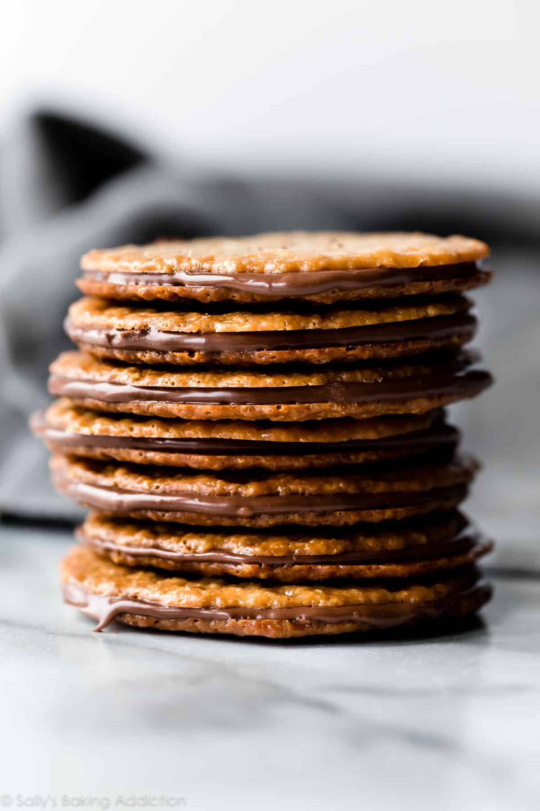

Easy Lace Cookies
Made from only 6 ingredients, these easy lace cookies are ready in 30 minutes and they taste like sweet brown butter and caramel.
Sandwich with a little chocolate for an extra special treat. Everyone loves these and they’re gluten free too!

Waht are Lace cookies?
Lace cookies are very thin and crunchy cookies made from butter, sugar, salt, and other ingredients.
The other ingredients vary depending on the recipe. Some recipes use oats and flour, other lace cookie recipes use nuts.
Lace cookies get their name from their delicate and see-through appearance. My mom always used to make these—they’re a beautiful cookie!
They’re also one of my favorite gluten free dessert recipes. It’s nice to have a gluten free option among your spread of Christmas cookies!
Ingredients
Instrictions
- Melt butter in a medium saucepan on low heat. Once melted, add the brown sugar, almond flour, salt, and milk/corn syrup.
Cook and whisk until sugar has dissolved and ingredients are completely combined, around 3-4 minutes.
(Note: If melted butter is separating from the mixture, remove the pan from heat and vigorously whisk until it is all combined again.
It will eventually come back together.)
- Remove from heat and whisk in vanilla extract. Mixture will be grainy and shiny.
Allow cookie dough to sit and thicken for about 5-10 minutes as the oven preheats. The mixture will thicken as it cools down.
- Preheat oven to 350°F (177°C). Line 2-3 large baking sheets with parchment paper or silicone baking mats.
- Drop scant teaspoonfuls (1 scant teaspoon of mixture per cookie, not Tablespoon) 3 inches apart onto prepared baking sheets.
Bake for 6-8 minutes until golden brown around the edges. The edges and centers will sizzle and bubble as the cookies bake!
- Allow cookies to cool for 5 full minutes on the baking sheets before transferring to a rack to cool completely. Cookies dry and crisp up as they cool.
- Once cool, enjoy cookies or sandwich with Nutella or melted chocolate.
To sandwich, spread either Nutella or melted chocolate onto the bottom of one cooled cookie and sandwich with another. See recipe note if using chocolate.
- Cookies without Nutella/chocolate filling will stay fresh covered at room temperature for 1 week.
Cookies with Nutella/chocolate will stay fresh covered at room temperature for 3 days or in the refrigerator for 1 week.